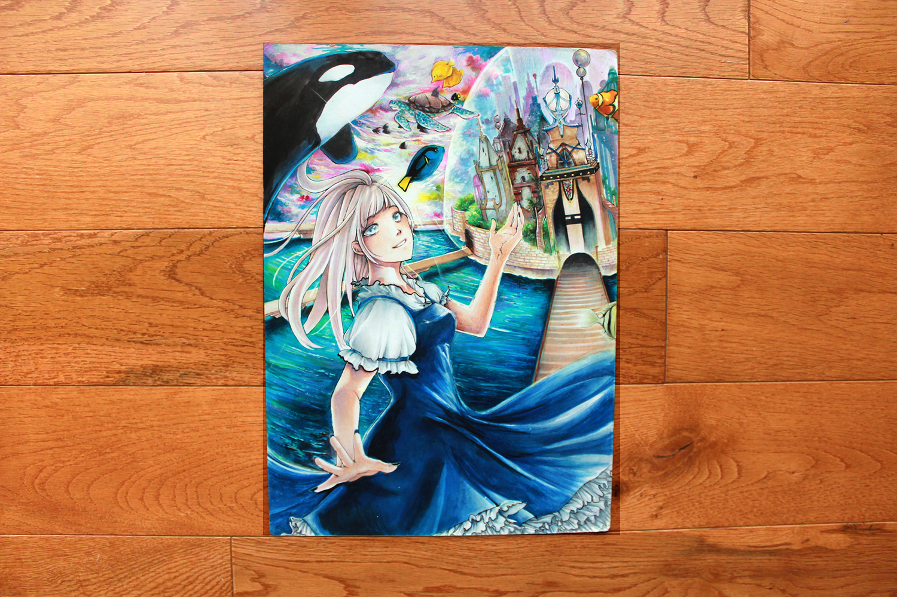

Alice in Atlantis
I was always fascinated with the legends and myths about the sunken city, Atlantis. Here, I created what I imagined would be Atlantis, filled with fantasy and liveliness. Taking a character who is well known for entering a fantasy world, I thought to create a strong fantasy adventure element within this illustration. Fully traditional, and done with copic and prismacolor markers.
